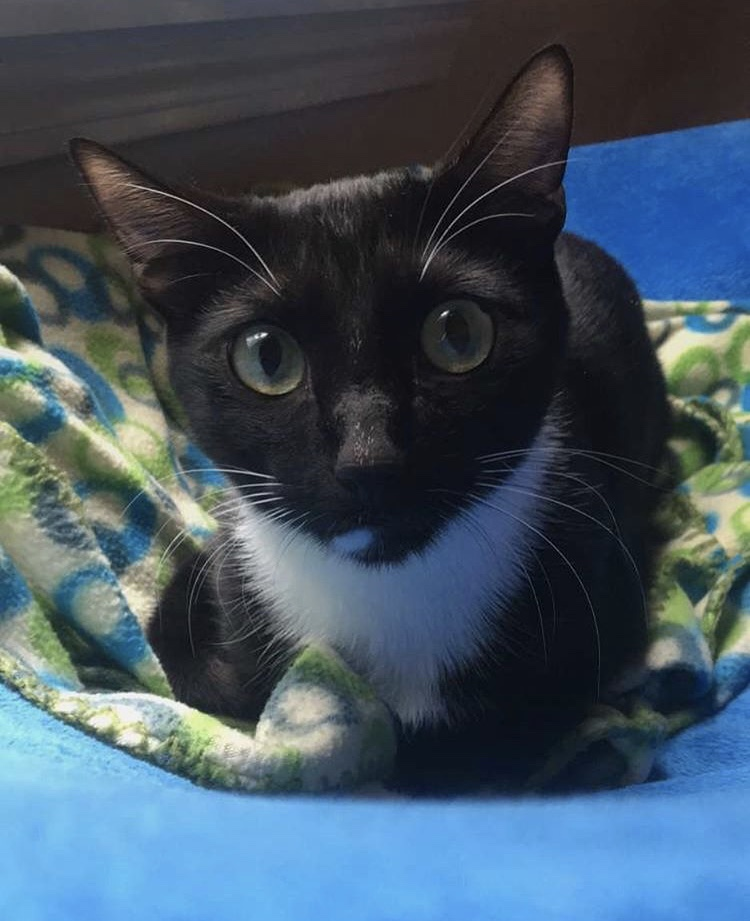
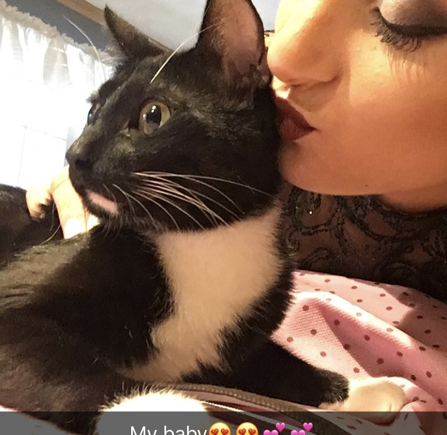

Over the past couple years of bonding with Lucifer we began to get really close and started to open chapter of our adventures together. As you have seen throughout my pictures on this website My kitty and myself are very close and almost every day we have something exciting to do. The best adventure times for us though would have to be during the warmer weather when I can actually get him on his leash and go outside and see what things he wants to be introduced to next. When kitty first became ours he was an outdoor cat, but sadly in the neighborhood i live in we have quite a few wild animals that would ruin him real quickly so we had to convert him back, but thats why our adventure time with one another is so important. The great part of our fabulous duo would have to be the fact that even though we go being apart for months on end he will always love me when i'm back no matter how long I made him wait. My kitty is the one I can bond with even when I'm hating the human population and so is he because we are the same personality just one in cat form and the other a human.
 